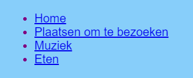

We gaan nu kijken hoe je meer pagina's aan je website kunt toevoegen.
blank_page.html en kopieer en plak alle code ervan in je nieuwe bestand. Omdat je het hele ding wilt kopiëren, kun je overal op de code klikken en gebruik je de sneltoets Ctrl (of cmd) en A om alles in één keer te selecteren.
<title></title> zodat je nieuwe pagina een geschikte titel heeft.
Trinket geeft de titel niet weer, maar je kunt dit bovenaan in jr browservenster zien als je je project downloadt.
<main></main> tags in het nieuwe bestand gebruik je de tags waarvan je weet dat je dingen aan de pagina
toevoegt, zoals alinea's, kopjes, afbeeldingen en lijsten!
Als er te veel tabbladen zijn waarmee Trinket in één keer kan worden weergegeven, kan je de pictogrammen < en > in de linkerbovenhoek van de tabbladen gebruiken om ertussen te bladeren.
Nu moet je links maken zodat je bij elk van je nieuwe pagina's kunt komen! Laten we alle links in een lijst plaatsen.
index.html de volgende code toe aan de hoofdtekst van je webpagina:
<ul>
<li><a href="index.html">Home</a></li>
<li><a href="attracties.html">Plaatsen om te bezoeken</a></li>
<li><a href="muziek.html">Muziek</a></li>
<li><a href="eten.html">Eetgelegenheden</a></li>
</ul>
href attribuut voor elke koppeling (denk eraan, dat is de tekst binnen de aanhalingstekens) zodat deze exact overeenkomt met de naam van elk HTML-bestand dat je hebt gemaakt.
<a></a> tags in geschikte beschrijvingen van uw pagina's.
Nu kun je naar je nieuwe pagina's navigeren!
